En Ukraine s’est déroulé récemment l'Eurovision. Cet évènement pourtant mineur a eu pour effet d'obliger le pouvoir ukrainien à montrer un visage « civilisé », notamment pour les célébrations du 9 mai.
Le résultat fut fulgurant: des dizaines de milliers de personnes dans les rues des villes du pays avec le portrait de leurs proches ayant combattus contre Hitler au sein de l'armée rouge, des nationalistes arrêtés, la police qui protège les manifestants. Le pouvoir ukrainien n'était pas prêt à cela, à cette résurgence du peuple qu'ils pensaient avoir détruit.
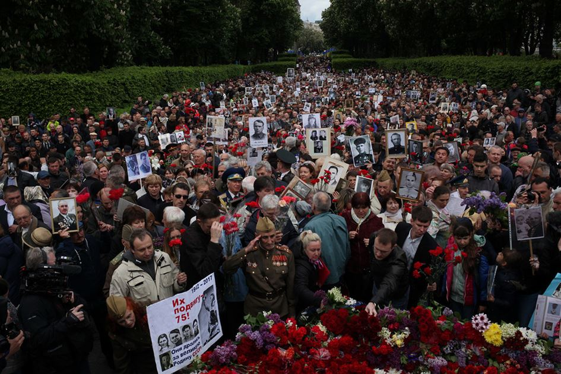Pourtant, tout avait bien commencé. Kiev s'était transformé en ce qu'elle imagine être une ville européenne, tolérante, même avec les collaborateurs et les nazis. Même si l'on n'imagine pas voir des photos géantes de soldats en uniforme nazi dans les rues des villes européennes. L'Ukraine remerciant particulièrement les étrangers, mais évidemment rien sur l'armée rouge qui a libéré la ville et par la même, semblerait-il, a empêché son destin allemand, donc européen. Les coquelicots ont remplacé les œillets (trop soviétiques), quand la botanique rencontre la décommunisation.
Le ton est donné par cette ignoble photo confondant la réconciliation avec l'Allemagne et la normalisation du nazisme. Ici un vétéran de l'armée soviétique sert la main à un vétéran de l'armée nazie ukrainienne UPA. Voici ce à quoi conduit ce mouvement très à la mode de transitionnal justice :
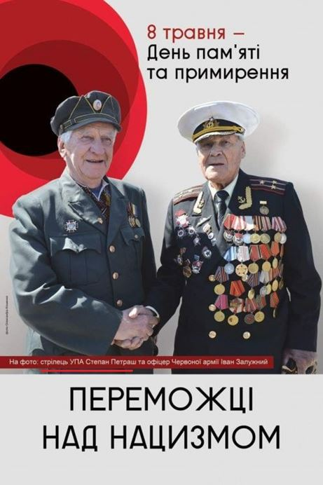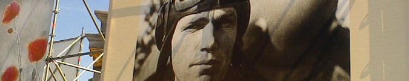Les membres de l'UPA (organisation militaires ukrainienne qui était dans les rangs de l'armée nazie) sont mis à l'honneur :
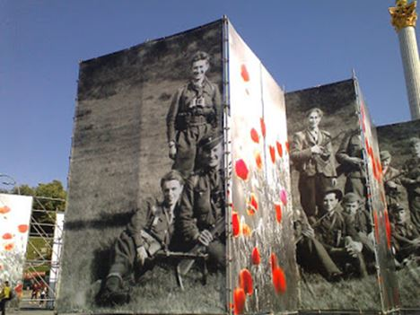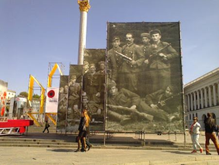A part les nombreuses photos à la gloire des nazis ukrainiens, l'on trouve quelques photos d'ukrainiens ayant combattus dans les rangs des armées US ou canadienne, mais aucune photo des nombreux soldats soviétiques. C'est une véritable insulte au peuple ukrainien.
En revanche l'on retrouve des choses très bizarres, mais devant certainement montrer le haut degré de « tolérance » de l'Ukraine, donc toute une série de photos d'invalides.
Et cette chose très improbable : « Les vainqueurs : 15 histoires étonnantes des vétérans de l'Opération anti-terroriste ».
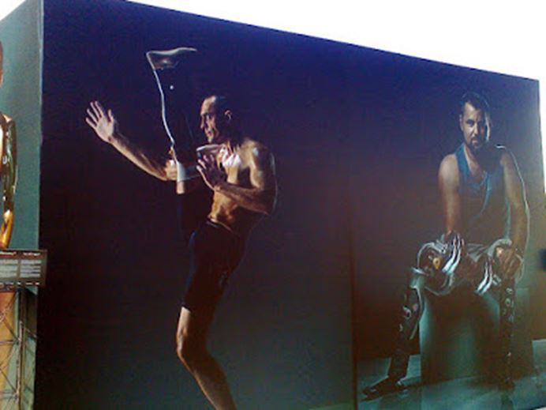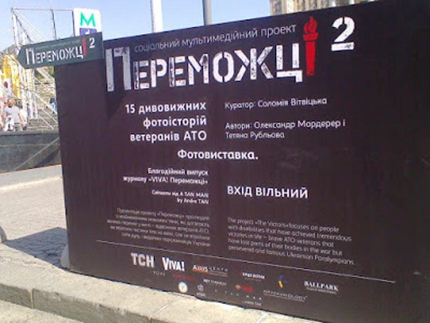C'est dans cette ambiance très « nazi-friendly » que le Président P. Poroshenko a annoncé que c'était la dernière année que l'Ukraine rendrait le 9 mai férié, désormais il n'y aurait que le 8 mai, comme tout pays européen qui se respecte. L'Ukraine a son histoire et elle ne suivra plus le scénario russe, qui ne concerne pas le peuple ukrainien. Il s'est lourdement trompé.
Dans l'internet russophone en Ukraine, la parade du 9 mai à Moscou était dans le top des recherches par mots-clés. Mais surtout, des dizaines de milliers d'ukrainiens sont sortis dans les rues, avec les portraits de leurs proches ayant combattus dans l'armée rouge, ayant été partisans, ayant été blessés, tués, par les nazis et les membres de l'UPA, ceux dont le portrait est érigé dans le centre de Kiev.
Une véritable marée humaine qui tient des œillets, dans la tradition nationale, les vétérans ont leur ruban de St George, les drapeaux rouges ont été remplacés par des ballons bleus ... avec le marteau et la faucille.
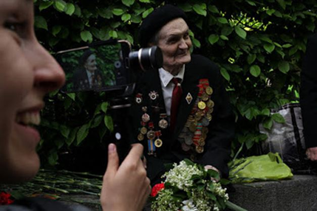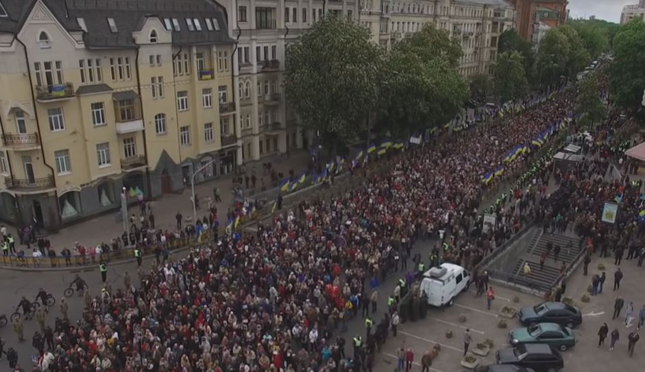A Kiev, l'ampleur impressionne (environ 20 000 personnes), les drapeaux ukrainiens bordent le trajet et sont tenus par les militaires, mais ne sont pas particulièrement repris par la foule.
A Dniepropetrovsk, la foule n'en finit pas d'avancer.
Il y a évidemment eu des débordements, mais la police a bizarrement fait son travail: elle a protégé les manifestants et de nombreux nationalistes ont été arrêtés, des policiers blessés. A Nikolaev, des vétérans d'Afganistan ont pris à part des néo-nazis de manière très énergique. A Kiev, à proximité de l'état-major des bandéristes, ils ont lancé de fumigènes sur la foule, mais la police les a contrôlé. La police a par ailleurs investi leur état-major et arrêté 24 personnes. A Dniepropetrovsk, une vingtaine de vétérans de l'Opération anti-terrorisme se fait frapper par la foule.
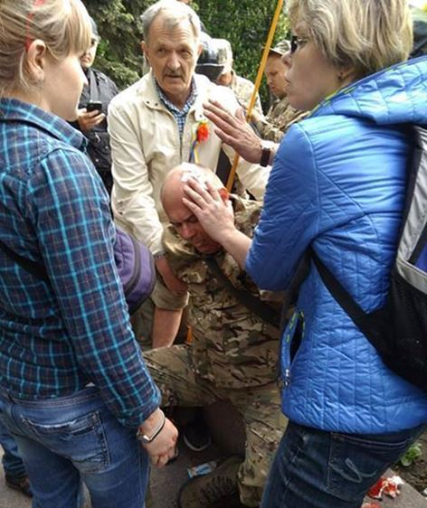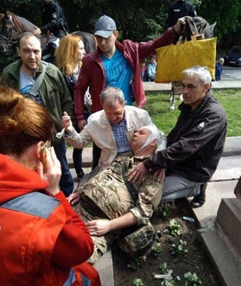Quelques arrestations de manifestants ont également eu lieu. A Odessa, un automobiliste ayant sorti un « mauvais » drapeau s'est retrouvé embarqué en même temps que son véhicule.
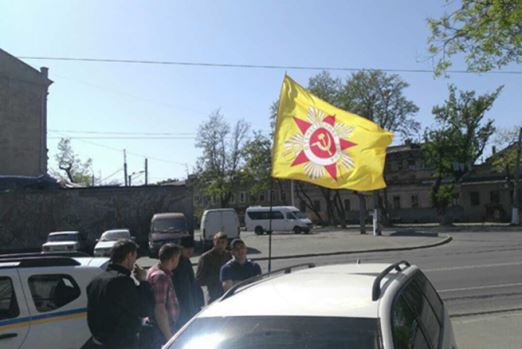A Kiev, le drapeau de la victoire a été sorti, ce qui a conduit à l'arrestation de ces personnes :
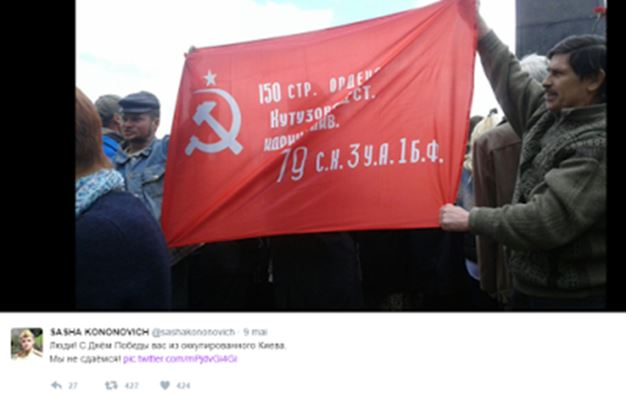Tout cela n'est pas resté sans réaction. Les néo-nazis de Nikolaev sont allés attaquer le local des vétérans d'Afganistan et ont fait plusieurs blessés. Les membres de l'UPA ont menacé de tuer tous les manifestants du 9 mai l'année prochaine, de les fusiller ou les brûler si nécessaire.
Les extrémistes ont demandé la démission d’Avakov, ministre de l'intérieur, en raison de l'arrestation des nationalistes lors des provocations.
A Kiev, par exemple, un policier, exaspéré, qui a interpelé un nationaliste, l'a forcé à manger sa casquette de Mazepa. Le nationaliste a été conduit à l'hôpital, plus choqué par le fait que physiquement en danger.
La plus forte réaction a concerné la ville de Dniepropetrovsk, où la police a été particulièrement efficace ... contre les nationalistes. Avakov a immédiatement procédé à la démission de leurs fonctions des responsables de la police de la région et de la ville et a ouvert une enquête sur les agissements des policiers. Le maire de la ville a annoncé qu'il couperait les aides financières apportées aux associations de vétérans de la Seconde Guerre Mondiale et les reverseraient au profit des vétérans de l'Opération anti-terroriste dans le Donbass. A chaque époque ses héros …
La panique provoquée par les manifestations du 9 mai en Ukraine est sincère ... et fondée. La presse ukrainienne explique que le Régiment immortel est une arme de cette guerre hybride menée par la Russie contre l'Ukraine. C'est en fait beaucoup plus grave que cela: malgré une propagande russophobe et « tolérante » particulièrement agressive, malgré les nombreuses répressions, dès que la population sent un certain relâchement de la pression exercée sur elle (cette fois-ci en raison de l'organisation de l'Eurovision), elle revient à sa véritable culture, elle revient au Monde russe. C'est l'échec du régime post-Maïdan et de sa tentative de créer un homme nouveau, coupé de ses racines.
Le régime ukrainien n'a en fait que réussi à exacerber le conflit idéologique intérieur en glorifiant les bourreaux sans pouvoir faire baisser la tête aux victimes. C'est cette défaite qu'a vécu l'Ukraine « pro-européenne » ce 9 mai.
Partager cette page